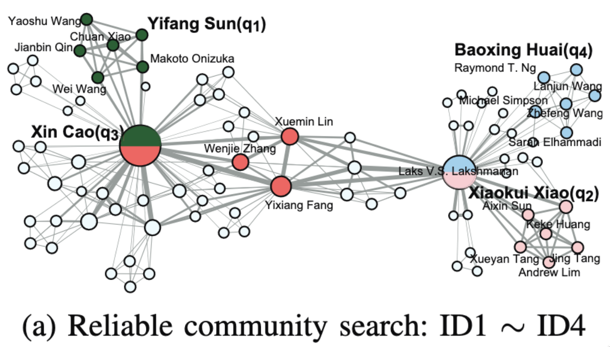
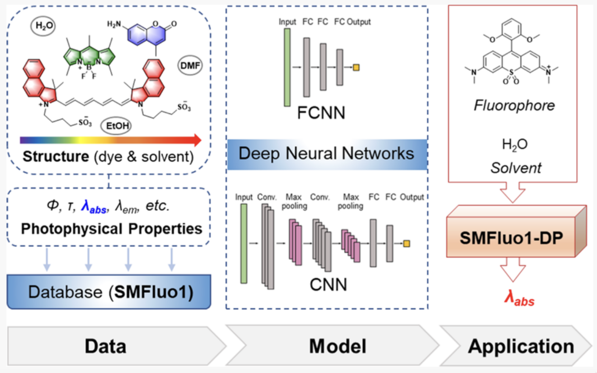

I am now a third-year master’s student at Zhejiang University, advised by Prof. Xiaoye Miao.
My research interest includes graph data management and graph neural networks. I have published 1 paper at the top international Database conference ICDE.
🔥 News
- 2022.02:  🎉🎉 A paper is accepted by JCIM!
- 2021.10:  🎉🎉 A paper is accepted by ICDE!
📠Publications
ICDE 2022
Reliable Community Search on Uncertain Graphs
Xiaoye Miao, Yue Liu, Lu Chen, Yunjun Gao, Jianwei Yin
Project |

- Abstract: In this paper, we study the community search problem on uncertain graphs.
JCIM 2022
Prediction of Maximum Absorption Wavelength Using Deep Neural Networks
Jinning Shao*, Yue Liu*, Jiaqi Yan*, Ze-Yi Yan, Yangyang Wu, Zhongying Ru, Jiayu Liao, Xiaoye Miao, Linghui Qian
Project |

- Abstract: In this paper, we develop AI models to predict the wavelengths of molecules.
🖠Honors and Awards
- 2022.10 China Optics Valley Scholarship (Top 1%)
- 2022.10 Outstanding Graduate Student
- 2022.10 Merit Graduate Student
📖 Educations
- 2020.09 - 2023.03, Master, Computer Technology, Zhejiang University, Hangzhou, China
- 2016.09 - 2020.06, Undergraduate, Mathematics and Applied Mathematics. Zhejiang University, Hangzhou, China.
💬 Invited Talks
- 2022.05, Reliable Community Search on Uncertain Graphs, ICDE 22 | [video]
💻 Internships
- 2021.10 - 2022.05, Hikvision Research Institute, Hangzhou, China.